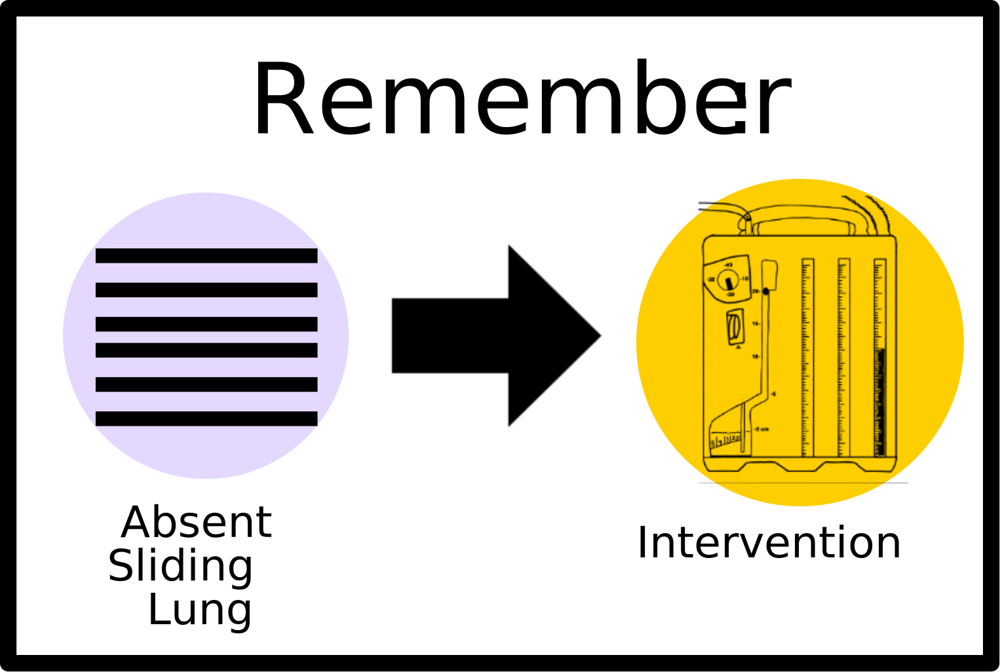

Intervention

If a patient's fast exam is positive for excess fluid surrounding the heart (cardiac tamponade), or a sliding lung sign is absent (tension pneumothorax), they may require an immediate intervention, consisting of a pericardiocentesis or needle decompression, potentially followed by placement of a chest tube.
